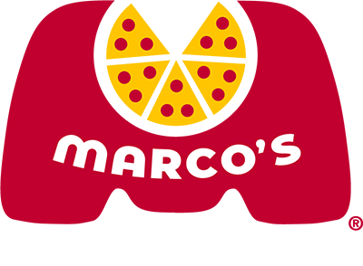

Marco's Pizza

“Naturally, the Italian Way started back in the old world. This is where our founder, Pasquale “Pat” Giammarco, learned as a young boy the importance of doing things the right way. Obsess over the details. Take pride in what you make. Appreciate the best things in life. When he was nine years old, he moved with his family from Sulmona, Italy to America and he brought the Italian Way with him. Pat founded Marco’s Pizza in 1978 and has been providing people with authentic Italian quality and primo moments ever since.”